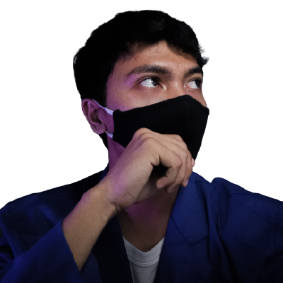

About
Hello, I'm Firdaus Kuncoro Ramadhani. I am a student from Bumigora University in Mataram studying computer science and I have an interest in front-end web development. For now, I am participating activity in the "Studi Independen-Kampus Merdeka" in Skilvul to extend my knowledge in front-end web development.
So far, I learned a lot of things in Skilvul, starting from the basics of UI/UX Designer, web, and javascript as well as increasing experience and relations.
